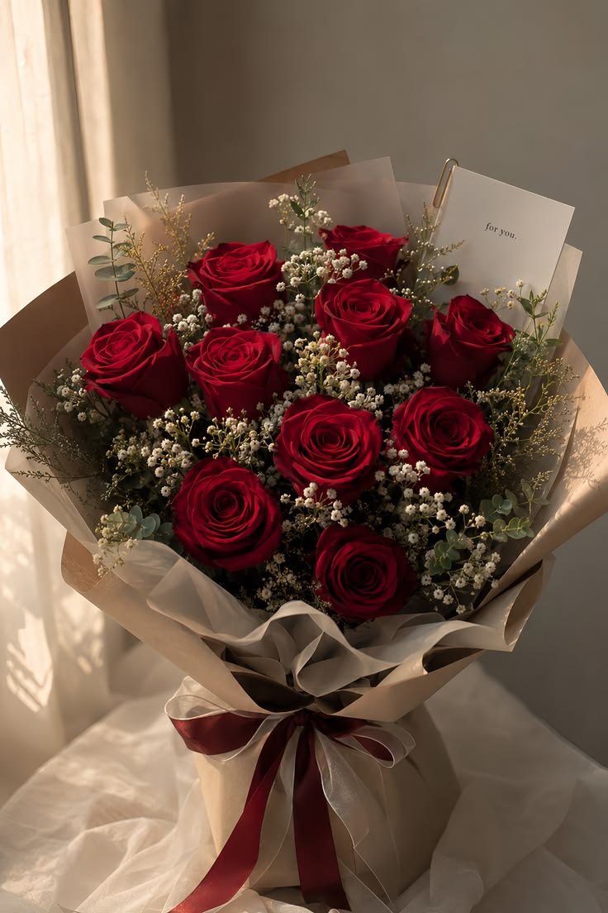
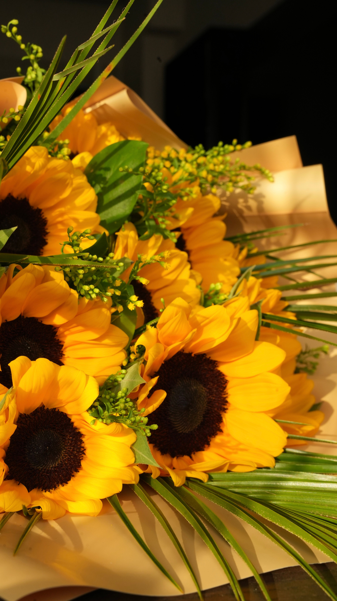
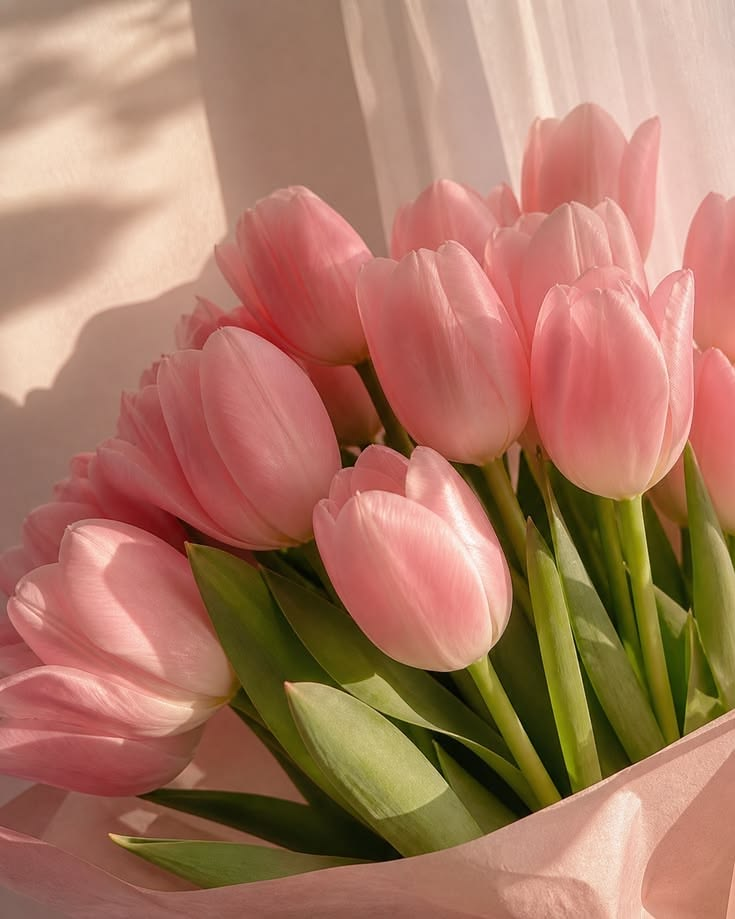
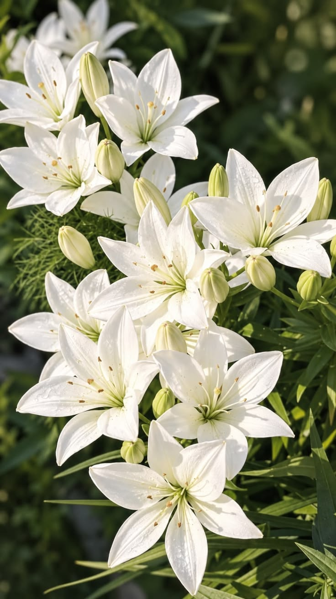
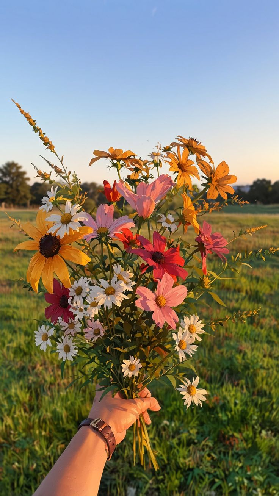
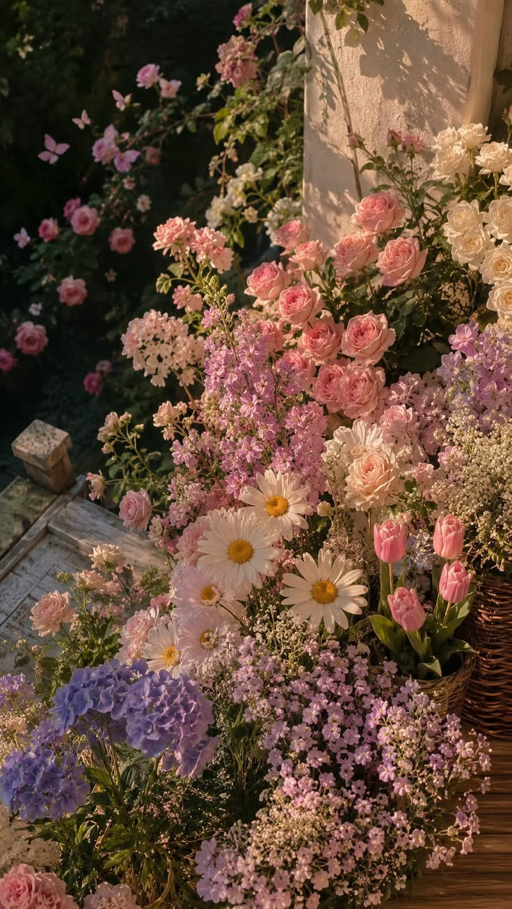

Amor eterno
Un ramo que representa el amor profundo, la conexión y los sentimientos que perduran.
Consultar por WhatsAppFlores con significado
Cada flor transmite un sentimiento. Descubrí nuestra colección de ramos diseñados para acompañar momentos especiales y convertirlos en recuerdos inolvidables.

Un ramo que representa el amor profundo, la conexión y los sentimientos que perduran.
Consultar por WhatsApp
Las flores amarillas y los girasoles transmiten alegría, energía positiva y admiración.
Consultar por WhatsApp
Tonos suaves que expresan cariño, dulzura y la belleza de los pequeños detalles.
Consultar por WhatsApp
Flores que simbolizan paz, sinceridad y nuevos comienzos llenos de esperanza.
Consultar por WhatsApp
Una combinación llena de vida para celebrar la amistad, la felicidad y los buenos momentos.
Consultar por WhatsApp
Una propuesta elegante para sorprender y hacer inolvidable cualquier ocasión.
Consultar por WhatsApp